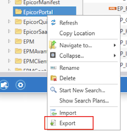
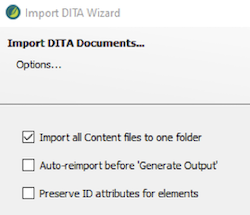
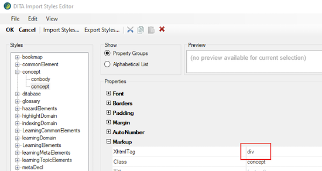
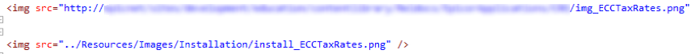

This tutorial explains how to move XML files from the legacy documentation system into a Flare project. You can use it to migrate the documents that do not need much rework on the structure and style.
The import process may bring in additional CSS styles that the Flare project does not support. To avoid overwriting the existing styles, you should work in a local project (referred to as “sandbox”).
To create a sandbox project, copy the template project from Git and put it into a chosen folder on your machine.
First, you copy the necessary files from the SharePoint library using the export feature in XMetal.
Right-click the folder you want to export and select Export.

The legacy system uses DITA for structuring XML files, so to import the files to Flare, you use the DITA import feature that simplifies the conversion of such files.
On the Project tab, select Import > DITA Document Set.
Clear the Link generated files to source files check box. Click Next.
In the Options dialog, keep the Import all Content files to one folder check box selected.

For example, under concept, select concept and change the XhtmlTag value to p.

The below table includes the list of the most used tags and the new markup properties that you should assign to them.
Class: table--bordered
Class: table
Class: table--color-header
Class: firstH1
Converted files have obsolete classes and tags you need to clean up or replace. You can handle this by mass updating the elements in the plain text editor.
Under Find in, select documents in the same folder and then select Replace All.
Under Options, select Find in source code.
Replace the following classes with a blank value (note, there’s a space before class):
Make the following replacements:
If the files you imported had images, their references are preserved as they were in the original files, pointing to the SharePoint library. You can change the references to link to the images with the same names in the current Flare project.
After you update image references, you also need to assign the image element with the standard class.
Insert an image from the project folder into the file to see what the new reference should look like.

For example, if you updated the image name prefixes, you may need to make the following replacement:
https://sharepoint/sites/education/contentlibrary/Installation/img_
to
../Resources/Images/InstallaLon/install_
If all your images were in the same folder, you can mass-replace the references using Replace All.
Under Replace/Action, select Add Class and in the field to the right, enter image-with-border.
The look of the imported tables may differ depending on the type they had in the XMetal file.
Normal tables have the necessary classes assigned during the import and display as needed; however, they may have additional styles assigned to rows and columns. You may need to review and clean them up.
Simpletables do not get assigned with the necessary classes during the import and do not include the col tag, so you need to recreate them from the standard template.
When you complete conversion and cleanup, you are ready move the XML files and images to your production project. You can then attach them to an existing TOC or create a new one.
Note that all references in the files (images, snippets, and so on) rely on the Content folder structure. It is important that you copy the files to a folder on the same level as where they were in your sandbox project.